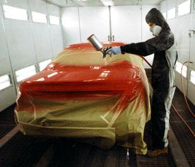
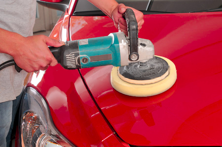
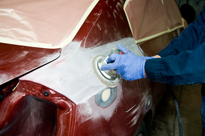

Que Hacemos.
  Pintamos coches completos de todos los tipos. Hacemos trabajos más pequeños como pintar piezas individuales. También realizamos trabajos de pintado de coches de rally y demás peculiaridades.
Enderezamos piezas, Arreglamos pequeños golpes y/o rayones. También si es necesario podemos cambiar piezas estropeadas por otras nuevas, siempre manteniendo nuestros estándares calidad/precio.
Arreglamos coches implicados en golpes fuertes, encargandonos de todo lo relacionado con la chapa y la pintura. Dejando a la elección del cliente, si derivamos nosotros mismos el coche a un mecánico de confianza o lo hace el cliente por sí solo.